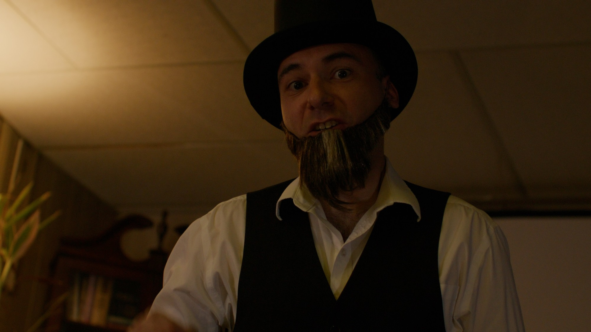
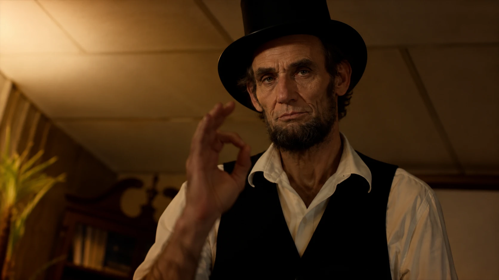
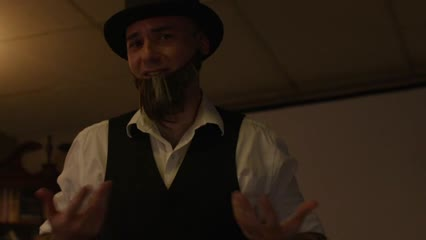
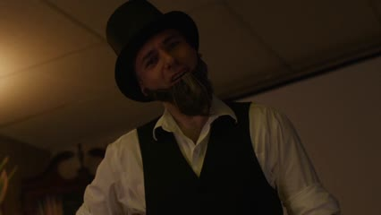
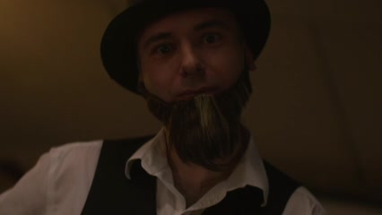
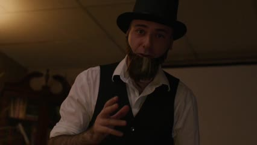
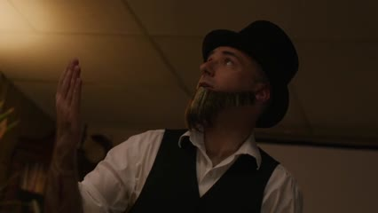

Lincoln face replacement for every shot in your Fiverr Lincoln video. Your expressions, timing and lighting stay exactly as filmed. Only the face becomes Lincoln.

Your clip→

Target look
What you filmed→The Lincoln you want on screen
Your footage
Every shot, covered
I went through your video and found 13 clips plus a short closing shot. All 14 are included.
01
6.1s
02
7.1s
03
3.6s

04
6.5s

05
6.5s
06
3.5s
07
8.4s
08
3.9s

09
2.6s

10
12.0s
11
3.9s

12
5.6s
13
3.5s
14
1.8s · bonus
14 shots~75s of footage1 room, 1 costume, so Lincoln stays consistent
Scope
Just the face. Everything else stays.
Stays the same
Expression, eye line and lip movement
Top hat, vest, shirt and room
Warm tungsten light and low camera angle
Clip length, timing and audio
Becomes Lincoln
Face shape, cheekbones and brow
Skin, age lines and deep-set eyes
Matched to every frame, including head turns
Lit and graded to sit in your shot
One choice for you: the beard
Your actor wears a clip-on beard. I can keep it, or replace it with Lincoln's real chin beard (as in the target). Same price either way.
Process
How each clip is made
01
Lincoln reference
One locked Lincoln likeness, used in every clip so he looks the same throughout.
02
Track the face
Your actor's face is tracked frame by frame, so every expression and mouth movement carries over.
03
Swap and clean up
Lincoln's face goes on. Edges, the hat brim and hands passing in front of the face get fixed by hand.
04
Match and deliver
Colour, grain and sharpness matched to your camera, so the swap is invisible.
Price
Full project, bulk rate
Because you're doing the whole video, every clip gets 25% off.
$487.50all 14 shots · 25% off
Full face replacement
Frame-by-frame cleanup
Colour and grain matched
Original resolution, audio kept
2 revisions per clip
Any clip length, no extra charge
13 clips at $50 $37.50 each$487.50
Closing shot (clip 14)$0
Bulk discount (25%)You save $162.50
Total for the whole video$487.50
Timeline
You approve the look first
Day 0You send the original clips
Within 48hClip 1 delivered for your approval
Days 3–6The other 13 shots, same Lincoln
Day 7Revisions and final delivery
To get started
What I need from you
All 14 original clipsFull quality, straight from the camera or your edit
Beard choiceKeep the costume beard, or use Lincoln's
Any notesMoments to watch closely, or shots to do first
Once the order is in, send the originals and I'll start on clip 1 right away.
Rehem AlamAI video · face replacement · compositing